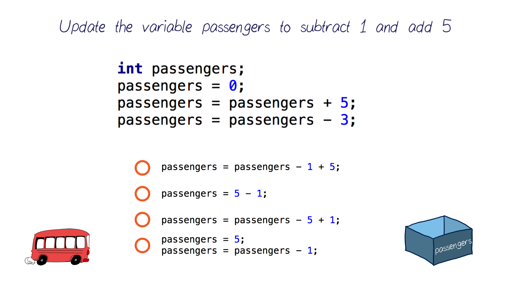

08. Third Bus Stop
Third Bus Stop
Question:
Start Quiz:

Solution:
INSTRUCTOR NOTE:
Note that Java allows you to write multiple instructions in the same statement!
Updating vs Setting variables
Updating vs Setting variables
When changing a variable value, you could either set it to a new value all together, or update it based on its previous value.
For example, if we have a variable called time and we want to add 5 to it, we write:
time = time + 5;
This will Add 5 to whatever value time already had!
But if we want to set time to 5 without caring about what the current value was, we write:
time = 5;